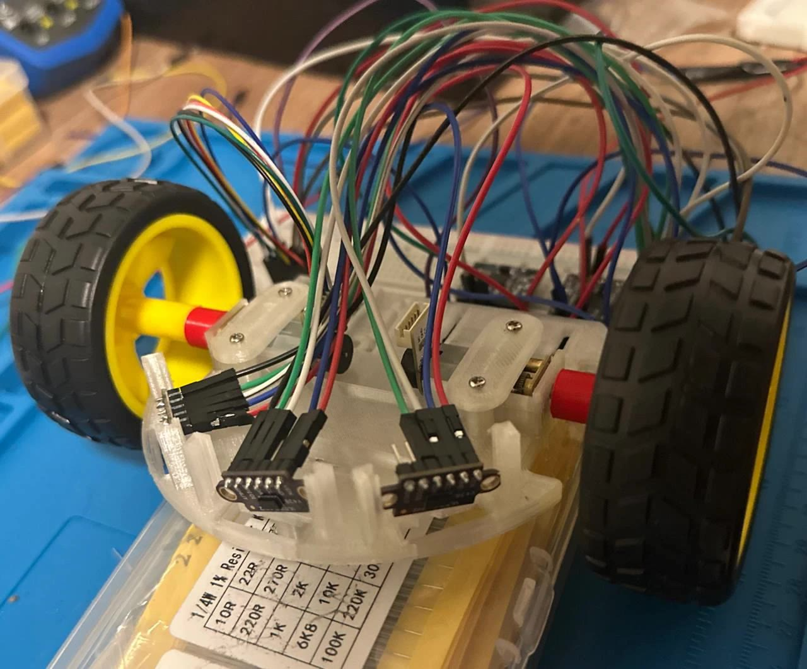
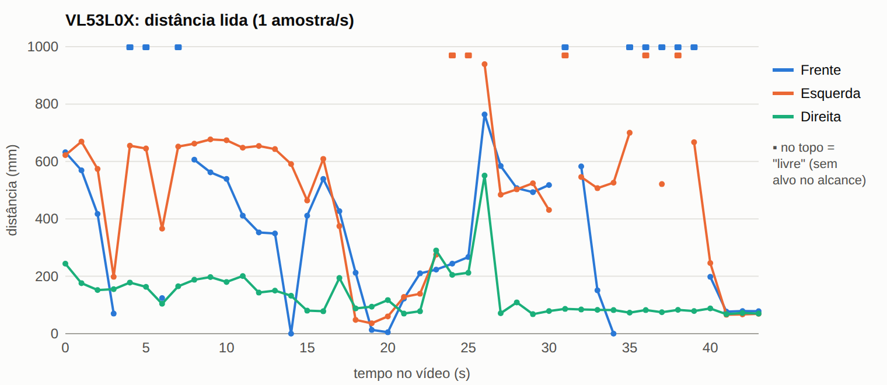
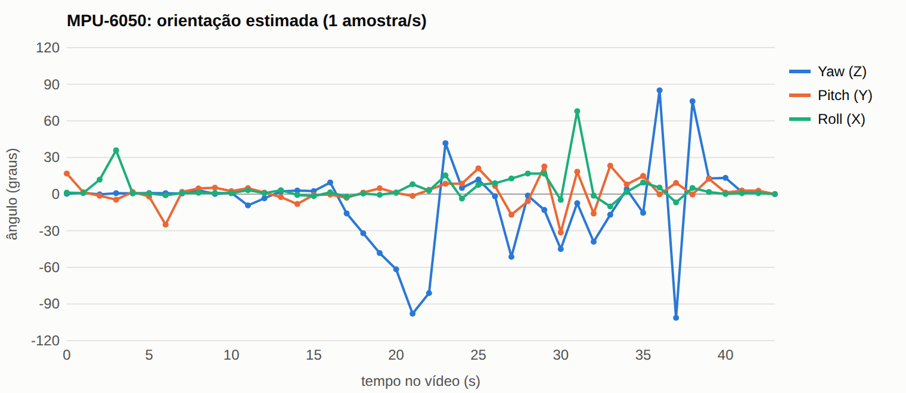

Testes de Hardware¶
Testes de hardware¶
Apresentar com detalhes os testes feitos para conferir se os objetivos do hardware foram atendidos, incluindo:
- Processamento (Arduino, ESP32 etc):
- Definir interface de desenvolvimento;
- Rodar exemplo mínimo.
- Sensores (temperatura, pressão, posição, velocidade etc.):
- Realizar leitura básica de dados;
- Validar/calibrar leituras;
- Definir taxas de amostragem e quantidade de dados para transmissão e/ou armazenamento;
- Validar taxas definidas e quantidade de dados;
- Realizar processamento básico de dados (thresholding, filtro média-móvel etc.).
- Armazenamento (memória interna, cartão SD, pendrive etc.):
- Armazenar dados básicos;
- Armazenar e validar dados de sensores.
- Atuadores (Motores DC, relés, LEDs etc.):
- Realizar acionamentos básicos;
- Realizar acionamentos com base em dados de sensores;
- Realizar processamento básico de dados (PWM etc.).
- Comunicações (UART, I2C, SPI, USB, WiFi, Bluetooth etc.):
- Transmissão básica de dados;
- Transmissão de dados de sensores dentro da taxa de amostragem.
| ID | Descrição | Data de Início | Data de Conclusão | Responsável | Resultados Esperados | Resultados Obtidos | Aprovação Interna (S/N) | Aprovação do Orientador (S/N) | Observações |
|---|---|---|---|---|---|---|---|---|---|
| 3.1 | Alimentação e Linhas de Tensão | 21/10/2026 | 21/10/2026 | Equipe de Energia | 3,3 V e VBAT estáveis | Resultado esperado atingido: estabilidade de 3,3 V e de VBAT confirmada. Bateria LiPo 2S inspecionada, balanceada e carregada a 8,40 V, conforme teste 2.3 de Energia | S | S | Estabilidade das linhas confirmada pela equipe executora. Referência ao teste 2.3 de inspeção e carga da bateria em Energia. |
| 3.2 | Sensores de Distância ToF VL53L0X (I2C) | Reconhecimento dos três sensores no barramento I2C, com endereços distintos, e leitura de distância frontal, esquerda e direita | Coberto em parte pelo teste 3.8 (protoboard): os três sensores responderam juntos, nos endereços 0x30, 0x31 e 0x29 atribuídos pelo firmware, sem nenhuma falha de leitura em 499 amostras. Falta a varredura I²C registrada e a resposta do sensor da direita | Sensores J3, J4 e J5, alimentados em 3,3 V. Ver teste 3.8. | |||||
| 3.3 | Acionamento dos Motores (DRV8833) | 22/10/2026 | 22/10/2026 | Aline / Equipe | Resposta PWM nos canais A e B | Alimentação direta dos motores a 6 V realizada, com corrente registrada de 22 mA; integração do acionamento em protoboard com driver alimentado a 5 V não funcionou | Resposta PWM não comprovada. Ver procedimento 3.3. Causa da falha identificada em 26/10/2026: conector mini do encoder do N20 (ver registro de 26/10). | ||
| 3.4 | IMU MPU6050 (I2C) | 26/10/2026 | 26/10/2026 | Giovana, Carol e Bruno | Reconhecimento da IMU no barramento I2C e leitura de dados de aceleração e giro | Resposta funcional observada: a orientação do modelo na tela acompanha as inclinações e rotações manuais da montagem | Sensor J6, alimentado em 3,3 V conforme o projeto. Ver procedimento 3.4. Medidas em repouso (1,04 g; giro < 0,2 °/s) no teste 3.8. | ||
| 3.5 | Encoders de Quadratura (18 cm) | 16/10/2026 | 17/10/2026 | Cláudio / Equipe | Leitura x4 por interrupção; erro \(\le \pm 3\%\) em 180 mm | Roteiro e script serial automatizados; aguardando bancada final | S | Issue #186, HU-05 | |
| 3.6 | Protótipo em protoboard: 3 VL53L0X e MPU6050 no mesmo I²C | 23/10/2026 | 23/10/2026 | Bruno Duarte | Os 4 dispositivos lidos ao mesmo tempo pelo ESP32-C3 | Sucesso parcial; dados congelam após "Zerar orientação" (detalhes na seção do registro) | S | Motores desconectados; alimentação pela USB | |
| 3.7 | Sensor de distância VL53L0X: calibração com régua | 26/10/2026 | 26/10/2026 | Ana Carolina Fialho | Erro de até ±10 mm ou ±5% de 5 a 30 cm, com 95% ou mais de leituras válidas | Estável (desvio-padrão de 1 a 4 mm) e linear; lê de 57 a 86 mm a mais. Desconto de 68 mm reprovado de 10 a 20 cm; 78 mm atende de 5 a 20 cm nos dados medidos | N | Validação independente do desconto de 78 mm e calibração dos outros 2 sensores pendentes. #175 | |
| 3.8 | Integração dos sensores I²C: 3 VL53L0X e MPU6050 | 26/10/2026 | 26/10/2026 | Ana Carolina Fialho / Equipe | Os 4 dispositivos respondem juntos a 50 amostras/s; distâncias e orientação acompanham a bancada | 499 amostras seriais sem falha, a 49–51 amostras/s; frente separou 3 distâncias (desvio de 3 a 14 mm); IMU parada a 1,04 g, giro < 0,2 °/s e 0,07° de deriva em ~10 s; esquerda respondeu; resposta da direita não demonstrada | N | Motores e encoder fora do teste (o firmware não os aciona). Sensor da direita e varredura I²C pendentes. Vídeos e dados na página | |
| 3.9 |
Procedimento de Teste 3.3: Motores e Circuito de Acionamento¶
Data dos testes: 22/10/2026.
1. Objetivo¶
Verificar a alimentação básica dos motores DC e testar a integração do circuito de acionamento montado conforme o esquemático do projeto.
2. Instrumentação¶
- Fonte de bancada: alimentação dos motores em 6 V, com indicação de tensão e corrente no visor.
- Motores DC com redução: componentes submetidos ao teste de alimentação direta e ao teste de integração.
- Driver de motores: alimentado em 5 V no teste de integração.
- Protoboard e fios de conexão: montagem do circuito de acionamento conforme o esquemático do projeto.
3. Montagem e Procedimento Realizado¶
- Conectar os motores diretamente a uma fonte de bancada ajustada para 6 V.
- Aplicar a alimentação aos terminais dos motores e observar as indicações de tensão e corrente da fonte.
- Montar o circuito de acionamento em protoboard conforme o esquemático.
- Alimentar o driver com 5 V e realizar o teste de integração para acionamento dos motores.
4. Resultados Obtidos¶
| Ensaio | Condição | Resultado |
|---|---|---|
| Alimentação direta dos motores | Fonte ajustada para 6 V | Aplicação de alimentação e consumo elétrico registrados. A rotação e o desempenho sob carga não foram quantificados. |
| Corrente dos motores | Leitura no visor da fonte com alimentação de 6 V | Corrente registrada de 22 mA (0,022 A). |
| Integração do circuito de acionamento | Montagem em protoboard conforme o esquemático, com driver alimentado a 5 V | A integração não funcionou. A causa da falha não foi identificada neste ensaio; em 26/10/2026, foi atribuída ao conector mini do encoder do N20 (ver registro de 26/10). |
5. Avaliação¶
O ensaio com alimentação direta a 6 V documenta uma verificação elétrica preliminar dos motores. O teste de integração apresentou resultado insatisfatório e não comprovou a resposta PWM nos canais A e B exigida no item 3.3. A falha de integração, isoladamente, não identifica qual componente ou ligação causou o problema.
Procedimento de Teste 3.4: IMU MPU6050¶
Data dos testes: 26/10/2026.
1. Objetivo¶
Verificar a resposta funcional da IMU MPU6050 às inclinações e rotações da montagem, acompanhando a atualização da orientação exibida no computador.
2. Instrumentação¶
- IMU MPU6050: sensor de aceleração e giro previsto no projeto, com comunicação I2C e alimentação de 3,3 V.
- Placa de controle, protoboard e fios de conexão: montagem utilizada para aquisição dos dados do sensor.
- Notebook com interface de visualização: exibição de um modelo tridimensional, indicadores numéricos e gráficos durante o ensaio.
3. Montagem e Procedimento Realizado¶
- Com a montagem conectada ao notebook e a interface de visualização em execução, observar a orientação inicial do modelo na tela.
- Segurar a protoboard e realizar inclinações e rotações manuais em diferentes direções.
- Acompanhar a mudança de orientação do modelo durante os movimentos e nas posições intermediárias.
- Repetir a movimentação para observar a continuidade da resposta exibida.
4. Resultados Obtidos¶
| Ensaio | Condição | Resultado |
|---|---|---|
| Resposta às inclinações | Inclinação manual da montagem em diferentes direções | O modelo na tela muda de inclinação durante a movimentação da protoboard. |
| Resposta às rotações | Rotação manual da montagem | A orientação do modelo é atualizada durante os giros, demonstrando resposta funcional ao movimento. |
| Visualização dos dados | Interface em execução no notebook | Modelo tridimensional, indicadores numéricos e gráficos visíveis durante o ensaio. Os valores não foram transcritos por falta de legibilidade suficiente. |
5. Avaliação¶
Não foram quantificados erro angular, deriva, taxa de amostragem ou latência. A calibração e a precisão das leituras permanecem sem validação quantitativa neste registro.
Procedimento de Teste 3.5: Encoders e Deslocamento em Bancada (Issue #186)¶
1. Objetivo¶
Validar a decodificação em quadratura (x4) via interrupções nos pinos GPIO do ESP32-C3 e aferir a exatidão da conversão de pulsos em milímetros ao longo de um percurso de 18 cm (180 mm) — correspondente à dimensão de uma célula do labirinto do Micromouse.
2. Instrumentação e Configuração¶
- Hardware: Microcontrolador ESP32-C3 com firmware carregado.
- Sensores: 2 encoders de efeito Hall acoplados aos micromotores N20.
- Encoder Esquerdo:
GPIO0(Canal A) eGPIO1(Canal B). - Encoder Direito:
GPIO3(Canal A) eGPIO10(Canal B). - Guia de Medição: Régua milimetrada calibrada de 300 mm ou paquímetro digital com batente fixo em 180,0 mm.
- Ferramenta de Coleta: Script Python
src/firmware/scripts/calibrar_deslocamento_18cm.py.
3. Critérios de Aceitação¶
- Contagem por Interrupção: Contagem bidirecional em ambas as rodas sem perda de pulsos e sem transições inválidas reportadas.
- Tolerância de Erro: $\(\text{Erro Relativo} = \frac{|D_{\text{medido}} - 180{,}0\text{ mm}|}{180{,}0\text{ mm}} \times 100\% \le 3{,}0\%\)$ $\(\text{Erro Absoluto Máximo Permissível} = \pm 5{,}4\text{ mm}\)$
- Calibração: Determinação da constante de calibração \(\mu\text{m/pulso}\) real: $\(K = \frac{180 \times 1000}{\text{Pulsos}}\)$
4. Roteiro de Execução¶
- Conectar a placa ao computador via USB.
- Posicionar o micromouse na marca de 0 mm da régua guia.
- Executar o script de teste:
- Pressionar ENTER para enviar o comando de zerar (
Z) e iniciar a amostragem. - Deslocar o robô manualmente de forma suave até a marca de 180,0 mm.
- Finalizar a captura com CTRL+C.
- O script registrará o relatório com os pulsos acumulados, as distâncias calculadas por roda, o erro relativo/absoluto e a nova constante recomendada para
ConfiguracaoEncoder.h.
Registro de 26/10/2026: protótipo em protoboard e situação dos testes¶
A pinagem de referência passou a ser a do protótipo testado em 23/10/2026: I²C com SDA no GPIO6 e SCL no GPIO7, XSHUT esquerdo no GPIO9, direito no GPIO8 e frontal solto, motores em GPIO0/1 (esquerdo) e GPIO10/21 (direito) e encoder esquerdo em GPIO3/4. A tabela completa está em hw/diagramas/pinagem.csv e os componentes em hw/bom/bom.csv.
| ID | Descrição | Data de Início | Data de Conclusão | Responsável | Resultados Esperados | Resultados Obtidos | Aprovação Interna (S/N) | Aprovação do Orientador (S/N) | Observações |
|---|---|---|---|---|---|---|---|---|---|
| 3.6 | Protótipo em protoboard: 3 VL53L0X e MPU6050 no mesmo I²C (SDA GPIO6, SCL GPIO7), cobrindo em parte os itens 3.2 e 3.4 | 23/10/2026 | 23/10/2026 | Bruno Duarte | Os 4 dispositivos lidos ao mesmo tempo pelo ESP32-C3: distâncias frontal, esquerda e direita, aceleração e giro | Sucesso parcial. Cerca de 100 amostras/s; ToF de 0 a 939 mm conforme o obstáculo, com ruído de 1 a 2 mm parado; IMU acompanha o giro feito à mão (yaw até −105,9°, roll até 79,8°). Após "Zerar orientação", os dados congelam (ver resultados abaixo) | S | Motores desconectados; alimentação pela USB. Dados |

Resultados do teste 3.6¶
Procedimento: gravar o firmware de teste do protótipo (pololu/VL53L0X@^1.3.1 e electroniccats/MPU6050@^1.4.5), abrir o painel no navegador, aproximar e afastar um anteparo de cada VL53L0X, girar o robô à mão nos três eixos, deixar o robô parado com um anteparo perto dos sensores e apertar "Zerar orientação". O ensaio foi gravado em vídeo, e os valores do painel foram transcritos a 1 leitura/s (0 a 43 s) e a 4 leituras/s com o robô parado (41,5 a 43,5 s): leituras_1hz.csv e leituras_repouso_4hz.csv. O tempo tem incerteza de ±0,5 s, e picos rápidos ficam fora dos gráficos.


| Medida (robô parado) | Frente | Esquerda | Direita |
|---|---|---|---|
| Distância média | 77,6 mm | 67,3 mm | 69,0 mm |
| Desvio padrão | 1,2 mm | 1,0 mm | 1,9 mm |
| Medida (robô parado) | X | Y | Z |
|---|---|---|---|
| Acelerômetro, média | −0,04 g | 0,01 g | 1,03 g |
| Giroscópio, média | −0,11 °/s | −0,01 °/s | −0,06 °/s |
- Taxa: 100 amostras/s em 40 das 44 leituras; quedas para 94, 95 e 86 amostras/s.
- Acelerômetro: 1,03 g em repouso, 3% acima do esperado; precisa de calibração.
- Giroscópio: offset abaixo de 0,2 °/s; em Z, cerca de 1,8° de deriva em 30 s sem compensação.
- Anomalia: logo após "Zerar orientação" (43 s até o fim), com o robô parado, o acelerômetro passa a 2,00 g nos três eixos, o giroscópio a cerca de 1000 °/s, as distâncias ficam fixas em 77, 67 e 74 mm e a taxa em 72 amostras/s. Repetir com o log serial gravado para achar a causa (I²C, firmware ou painel).
Pendências: varredura I²C com os endereços 0x29, 0x30, 0x31 e 0x68 e conferência de qual endereço é qual sensor; medidas contra a régua a 54, 90, 180 e 270 mm; deriva do giroscópio parado por 30 s; teste com bateria e bucks.
Atualização dos testes 3.3 e 3.5¶
- 3.2 e 3.4, VL53L0X e MPU6050: o teste 3.6 cobre em parte os dois itens. Os três VL53L0X e a MPU6050 foram lidos juntos e cada ToF respondeu ao seu anteparo, mas a varredura que mostra os endereços distintos ainda não foi feita.
- 3.3, acionamento dos motores (22/10/2026): com o motor ligado direto na fonte de bancada a 6 V, a corrente foi de 22 mA. A integração em protoboard, com o driver alimentado a 5 V, não funcionou. Em 26/10/2026 a causa foi identificada: falha no conector mini do encoder do N20, que também leva os fios de potência do motor. O DRV8833 não apresentou falha. Falta refazer o conector e repetir o acionamento pelo driver para comprovar a resposta PWM.
- 3.5, encoders: o procedimento acima usa os pinos da Rev 1 (GPIO0/1/3/10), e a página Justificativa dos componentes cita as reservas da Rev 2.0 (GPIO4/5 e GPIO6/7). Na pinagem adotada, o encoder esquerdo fica em GPIO3 (A) e GPIO4 (B); o direito, reservado em GPIO5 e GPIO20, ainda não está ligado.
Issues e tarefas relacionadas¶
| Issue | Tipo | Situação no GitHub | Relação com os testes |
|---|---|---|---|
| #79 Sistemas Eletrônicos | Entrega | Aberta | Entrega da eletrônica |
| #87 Esquemático Elétrico | Pacote | Aberta | Atualizar para a pinagem adotada |
| #93 Projeto e Montagem do Circuito | Pacote | Aberta | — |
| #94 Montagem do protótipo | Atividade | Aberta | Evidência no teste 3.6 |
| #95 Projeto da PCB, #96 Soldagem, #97 Cabeamento e conectores | Atividade | Abertas | Conector do encoder (3.3) entra no #97 |
| #98 Integração dos Componentes | Pacote | Aberta | — |
| #99 Sensores → MCU | Atividade | Aberta | Teste 3.6; falta HI-04 |
| #100 Encoders → MCU | Atividade | Aberta | Teste 3.5 na pinagem adotada |
| #101 MCU → Driver, #102 Driver → Motores | Atividade | Abertas | Teste 3.3, a repetir |
| #103 Alimentação → Sistema | Atividade | Aberta | Teste 3.1 e ensaios 2.5 e 2.7 de energia |
| #104 Testes de Hardware | Pacote | Aberta | Esta página |
| #105 Teste do microcontrolador | Atividade | Aberta | HI-03 do roteiro |
| #106 Teste dos sensores | Atividade | Aberta | Teste 3.6; falta HI-05 |
| #107 Teste dos motores, #108 Teste do driver | Atividade | Abertas | Teste 3.3 |
| #109 Teste dos encoders | Atividade | Aberta | Teste 3.5 |
| #110 Teste de alimentação | Atividade | Aberta | Teste 3.1 |
| #111 Teste integrado | Atividade | Aberta | HI-07 e HI-08 do roteiro |
| #112 Validação do Hardware, #113 Verificação dos requisitos | Pacote / atividade | Abertas | Depois dos testes integrados |
| #116 Aprovação para integração com o software | Atividade | Aberta | Depende do #111 |
| #175 Teste de bancada dos sensores VL53L0X | Tarefa (software) | Aberta | Medidas contra a régua (HI-05) |
| #381 Testes isolados de software da Rev 2.0 | Tarefa (software) | Aberta | Bancada com os 3 ToF e a IMU juntos |
| #213 Energização inicial da placa | Tarefa (energia) | Aberta | HI-02; a descrição ainda cita o LiDAR |
| #214 Queda de tensão na aceleração, #216 Capacitores de bulk, #218 UVLO na pista | Tarefa (energia) | Abertas | HI-06 e HI-07 |
| #286 Integrar módulos no chassi, #289 Integração mecânica com hardware e software | Tarefa (estrutura) | Abertas | HI-08 |
| #186 Leitura dos encoders | Tarefa (software) | Fechada | Origem do teste 3.5 |
| #344 Driver dos 3 VL53L0X, #378 Driver do MPU6050 | Tarefa (software) | Fechadas | Firmware dos sensores do teste 3.6 |
| #201, #202, #204, #206, #207, #209 | Tarefa (energia) | Fechadas | Ensaios 2.1 a 2.7 de Energia |
| #170 Teste com o LiDAR real | Tarefa | Fechada | Sem efeito: o LiDAR saiu do projeto na Rev 2.0 |